03. Integrated circuits and multiplexing
From a single logic gate (SSI) to a microprocessor with millions of transistors (VLSI), the scale of integration determines how a device is packaged, tested and used. This module covers integration scales, IC packaging technology, and the most common MSI circuits found on aircraft: decoders, encoders and multiplexers.
CO/CLO: CLO2Time (estimate): ≈ 8.8 lecture hours60 slidesQuestions: 70 (48 original)
Slide: Integrated circuit and multiplexing pp.1-60 · Tooley Ch.8-9 (p.139-164) · Floyd Ch.6 (p.313-386); IC technology: Ch.15 · Book content map
Tooley: Ch.8 Integrated circuits (p.139-148) + Ch.9 MSI logic (p.149-164): fan-in/out, decoders, encoders, multiplexers
Floyd: Ch.6 Functions of Combinational Logic (p.313-386): decoders, encoders, multiplexers, demultiplexers, comparators; IC fabrication technology is cross-referenced with Ch.15 Integrated Circuit Technologies (p.855+)
Tooley splits 'IC technology' (ch.8) and 'MSI applications' (ch.9) into two chapters; Floyd bundles all MSI applications into Ch.6 and keeps fabrication technology separate at the end of the book (Ch.15).
- Scale of integration: from SSI to VLSI
- Fan-in and fan-out
- Decoders and encoders
- Multiplexers (data selectors)
- Application in avionics systems
📷 The lecturer's original slides (click to enlarge)
60 slides
 icmux·1
icmux·1 icmux·2
icmux·2
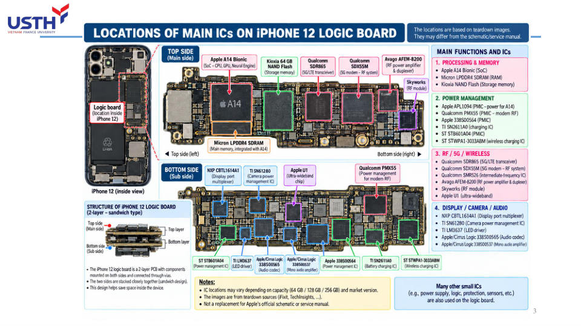
icmux·3 icmux·4
icmux·4 icmux·5
icmux·5 icmux·6
icmux·6 icmux·7
icmux·7 icmux·8
icmux·8 icmux·9
icmux·9 icmux·10
icmux·10 icmux·11
icmux·11 icmux·12
icmux·12 icmux·13
icmux·13 icmux·14
icmux·14 icmux·15
icmux·15 icmux·16
icmux·16
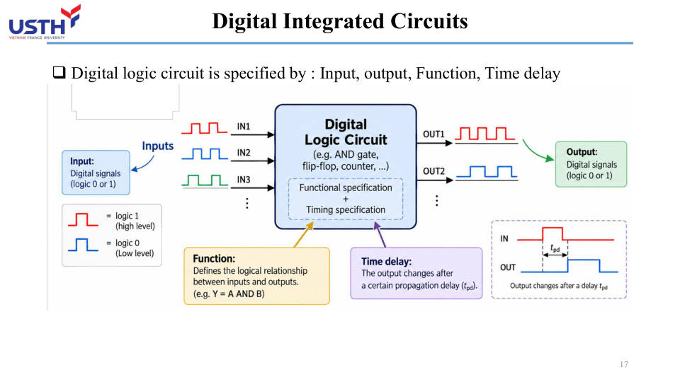
icmux·17 icmux·18
icmux·18
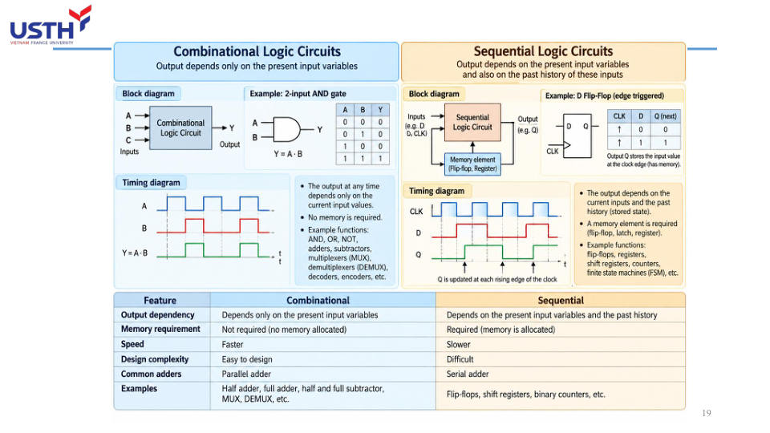
icmux·19
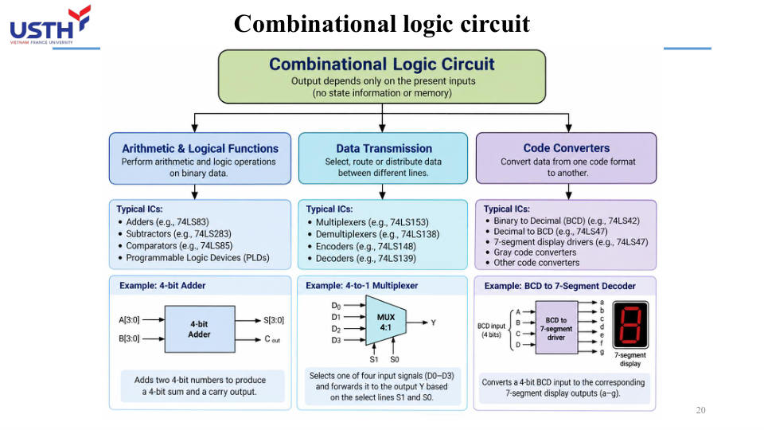
icmux·20 icmux·21
icmux·21 icmux·22
icmux·22 icmux·23
icmux·23 icmux·24
icmux·24 icmux·25
icmux·25 icmux·26
icmux·26 icmux·27
icmux·27 icmux·28
icmux·28 icmux·29
icmux·29 icmux·30
icmux·30 icmux·31
icmux·31 icmux·32
icmux·32 icmux·33
icmux·33 icmux·34
icmux·34 icmux·35
icmux·35 icmux·36
icmux·36 icmux·37
icmux·37 icmux·38
icmux·38 icmux·39
icmux·39 icmux·40
icmux·40 icmux·41
icmux·41
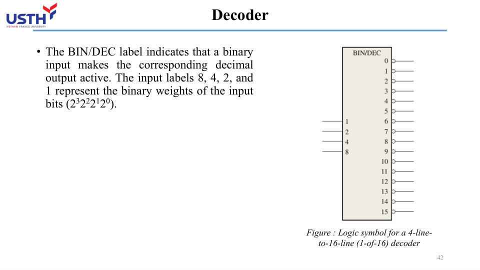
icmux·42
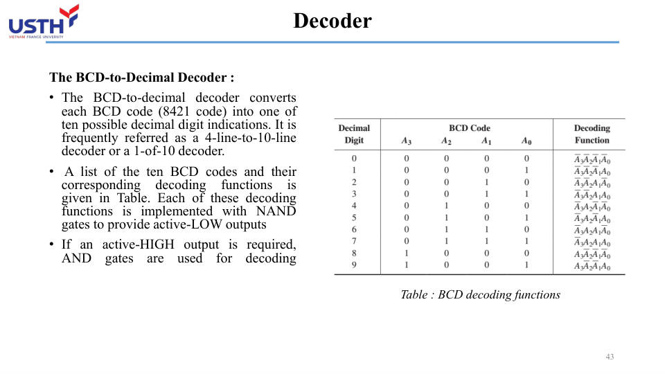
icmux·43 icmux·44
icmux·44 icmux·45
icmux·45 icmux·46
icmux·46 icmux·47
icmux·47
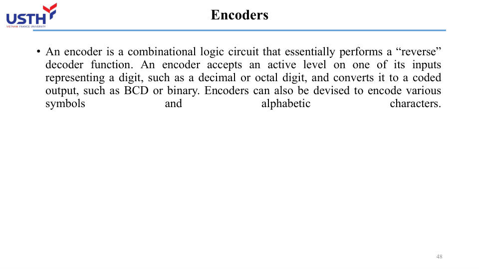
icmux·48 icmux·49
icmux·49 icmux·50
icmux·50
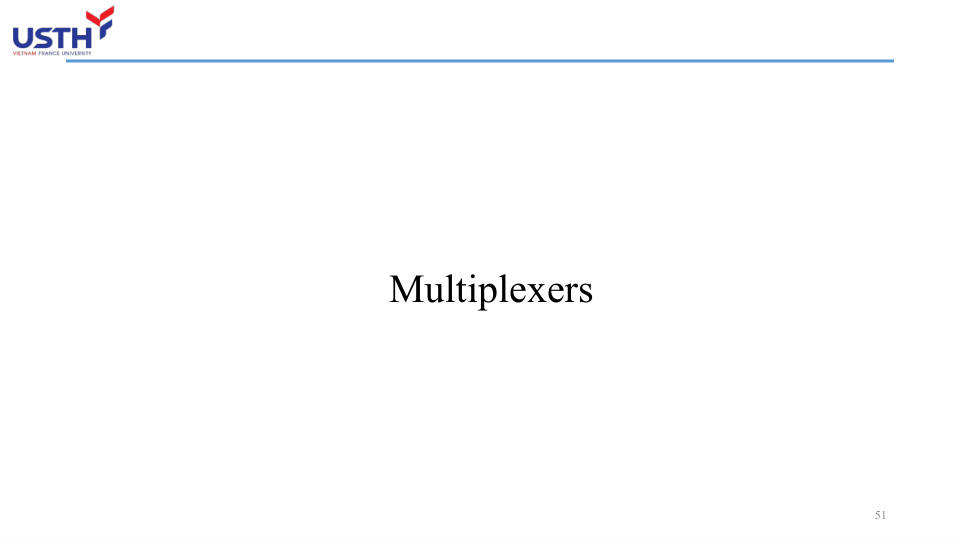
icmux·51
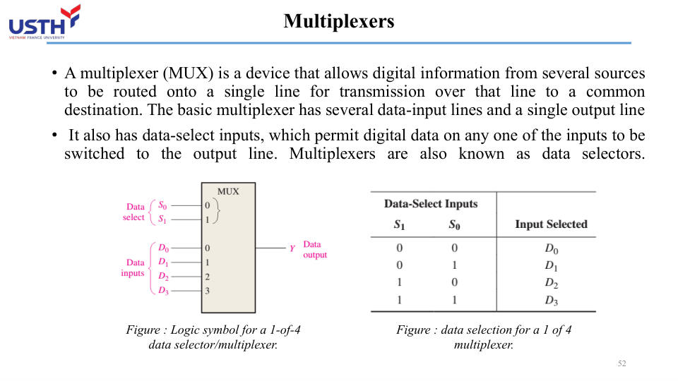
icmux·52 icmux·53
icmux·53 icmux·54
icmux·54 icmux·55
icmux·55 icmux·56
icmux·56 icmux·57
icmux·57
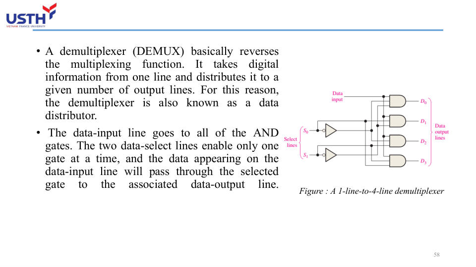
icmux·58 icmux·59
icmux·59 icmux·60
icmux·60Lecture
Scale of integration: from SSI to VLSI
- SSI (a few gates) → MSI (tens-hundreds of gates) → LSI → VLSI (millions of transistors)
- IC fabrication and packaging technology (DIL, PLCC, QFP, SOIC…)
Four scales of integration
Scale of integration is measured by the number of equivalent logic gates on a chip:
| Scale | Gate count | Example |
|---|---|---|
| SSI | 1-11 | A single AND/OR/NAND gate |
| MSI | 12-99 | Decoders, multiplexers, bus transceivers |
| LSI | 100-9,999 | Small memory, control circuits |
| VLSI | ≥10,000 | Microprocessors (millions of transistors) |

📖 Explanation for beginners
The attached image (from the original lecture) shows all 5 integration scales visually on one axis: moving right, the equivalent gate count grows exponentially, from a single NAND gate (SSI) up to a whole microprocessor (VLSI/ULSI) containing millions of gates.
The key point to grasp: this is not a linear scale. Going from SSI (1 to 11 gates) to MSI (12 to 99 gates) only multiplies by about 10, but going from LSI to VLSI jumps by thousands of times. So whenever someone says a chip is “more complex”, always ask at WHICH scale, rather than comparing vaguely.
Fabrication technology: from wafer to die
An IC starts life on a round silicon wafer, on which hundreds of identical circuits are etched simultaneously using photolithography. After testing, the wafer is cut into individual dies, each of which is then packaged and wired out to external pins.
📖 Explanation for beginners
The wafer-to-die process is like baking one giant sheet cake and cutting it into many identical small pieces: photolithography “prints” hundreds of identical circuits simultaneously onto one round wafer, then a dicing machine cuts the wafer into individual dies.
The reason for working this way rather than fabricating one chip at a time: setting up the etching process (photomasks, machinery) is very expensive, but once set up, printing hundreds more copies on the same wafer costs almost nothing extra, sharply cutting the per-chip price at large production volumes.
Classification example 1: a standard logic gate
A single 2-input NAND gate contains only a handful of transistors.
Since the gate count is below 12, this is the classic example of the smallest integration scale.
📖 Explanation for beginners
This is the simplest classification example to start with: just count the logic gates in a device, then look it up against the 4-level table from the first slide.
A single 2-input NAND gate needs only a handful of transistors to build (typically 4 with CMOS technology), and its equivalent gate count is 1, sitting clearly within the SSI range of 1 to 11, with nothing further to argue about.
Classification example 2: a 64-gate bus transceiver
An IC bus transceiver contains 64 logic gates and buffers (Tooley Ch.8 Q9).
📖 Explanation for beginners
At 64 logic gates, this number falls exactly within the MSI range of 12 to 99, neither SSI (below 12) nor yet enough for LSI (100 and above).
This exercise builds the skill of accurate lookup: remembering just 3 boundary numbers (12, 100, 10,000) lets you classify ANY chip immediately, as long as you know its gate count, with nothing else to memorise.
Classification example 3: a microprocessor
A modern microprocessor contains from a few million to several billion transistors.
This is why microprocessors are always classed as VLSI, even though the logic inside still rests on the same basic gates covered earlier.
📖 Explanation for beginners
The microprocessor is the most extreme example of integration scale: a modern CPU can contain anywhere from a few million to tens of billions of transistors, exceeding the 10,000-gate threshold for VLSI (the lowest bar for that class) by thousands or even millions of times.
An interesting fact worth remembering: no matter how enormous the gate count inside a CPU, EACH individual gate still operates on the exact same basic AND/OR/NOT principles learned in Module 02, with no other “magic” involved: the complexity comes entirely from the NUMBER of gates wired together, not from any new kind of logic.
Comparison example: DIP vs PLCC
The same MSI circuit can be packaged as DIP (Dual-In-line Package, two parallel rows of pins) or PLCC (Plastic Leaded Chip Carrier, pins around all four sides).
PLCC allows more pins in the same footprint area: useful when a circuit needs many I/O signals but board space is limited (Tooley Ch.8 Q5).
📖 Explanation for beginners
DIP and PLCC are two entirely different “packaging” styles for the same underlying circuit: DIP arranges pins in two parallel rows (like a centipede with legs on two sides), while PLCC spreads pins evenly around all four edges of a square package.
The reason PLCC exists: when a circuit needs a great many I/O pins (say, 44 or 68) but board space is limited, placing pins around all four edges packs more pins into the same footprint than placing them on only two edges like DIP, much like a room with windows on all four walls lets in more light than one with windows on only two facing walls.
Comparison table of IC package types
| Package | Feature | Mounting |
|---|---|---|
| DIL/DIP | Two parallel rows of pins | Through-hole or socket |
| PGA | Pin grid array | Socket |
| PLCC | Pins on all four sides, smaller than DIP | Socket or soldered |
| SOIC | Surface-mount, compact | Always soldered |
| QFP | High pin density on all four sides | Surface-mount soldering |

📖 Explanation for beginners
This table lists 5 common package types, each with its own shape and mounting style. What matters is not memorising every detail, but noticing the overall TREND: modern package styles (SOIC, QFP) all move toward permanently soldering directly onto the board (surface-mount), instead of plugging into a socket like traditional DIP/PGA.
This trend reflects the real demand for smaller size and higher reliability in modern electronics, explained further in the next slide on aviation applications.
Aviation application: choosing a vibration-resistant package
Avionics equipment must operate reliably under strong vibration and wide temperature swings. Socketed packages (DIP/PGA) carry a risk of loose contact over time from vibration, so many aircraft LRUs favour soldered packages (SOIC, QFP) or sockets with mechanical vibration-locking features plus conformal coating over solder joints.

📖 Explanation for beginners
Vibration is the enemy of any loosely secured electrical connection: a chip plugged into a socket can, over time, gradually vibrate loose from its contact point, causing intermittent faults that are extremely hard to diagnose (working sometimes, failing other times, depending on whether vibration has just re-seated the contact or not).
This is why avionics equipment usually favours soldered packages (SOIC, QFP) over sockets: a solder joint cannot gradually “loosen” the way a mechanical socket contact can. When a socket is still needed (for easy component replacement), engineers add mechanical vibration-locking features plus a protective conformal coating to reduce the risk.
⚠️ Warning: don't infer integration scale from chip 'age' alone
A chip made in 1981 was most likely DIP/SSI-MSI, but that is only an inference from the technology common at that time, not an absolute rule. Scale of integration is defined by the ACTUAL gate count on the chip, not its manufacturing year.
📖 Explanation for beginners
This is an important warning about REASONING itself: it is tempting to think “an old chip must be SSI/MSI because the technology back then was simpler”, but that is only a STATISTICAL pattern (true for most chips of that era), not a DEFINITION.
The PRECISE definition of integration scale rests on exactly one criterion: counting the actual equivalent gate count on the chip. A chip made in 1981 could still be VLSI if it genuinely contained over 10,000 gates (rare for that era), and conversely a recently made chip could still be just SSI if its function is simple (say, a single standalone logic gate).
Quick self-check
Before moving on: a chip containing about 200 logic gates belongs to which integration scale? If it were made after 2000, what packaging style would it likely use?
📖 Explanation for beginners
This self-check exercise applies the exact same classification table: 200 logic gates falls outside the 12-to-99 MSI range (exceeding 99), so it must be classified as LSI (100 to 9,999).
As for packaging, if made after the year 2000, this chip would most likely use a modern surface-mount style (SOIC or QFP) rather than the traditional socketed DIP/PGA, following the technology trend from the earlier slides, though this is only an inference from a general trend, not an absolute rule (as warned on the previous slide).
Fan-in and fan-out
- Definition and loading limits of a logic gate
- Why exceeding fan-out causes logic-level failures
Defining fan-out
Fan-out is the maximum number of standard inputs of the same logic family that an output can safely drive without pushing logic levels outside spec.
📖 Explanation for beginners
Picture fan-out as a vehicle's maximum towing capacity: if a vehicle is rated to tow at most 10 identical cargo cars, hitching an 11th car will leave it unable to cope, causing sluggish or faulty operation. Likewise, a gate with fan-out=10 only has enough drive (current) to hold the correct logic level for up to 10 same-family inputs downstream.
The key point: fan-out is a property of the OUTPUT (the signal source), describing how much load it can carry, quite different from fan-in on the next slide, which is a property of the INPUT.
Defining fan-in
Fan-in is the equivalent load (in standard same-family inputs) that ONE specific input places on the preceding stage.
- Standard inputfan-in = 1
- Input feeding two gates at oncefan-in = 2
📖 Explanation for beginners
If fan-out is a vehicle's towing capacity, fan-in is like the weight of each cargo car: a normal input weighs exactly 1 standard load unit, but if one signal line is wired into MULTIPLE gates at once (like line B in the example), it creates a correspondingly heavier load matching that number of gates.
This is why, when calculating a circuit's real load, you cannot just count “wires”, you must count how many actual logic-gate inputs are connected, since one wire can branch out to several different gates.
Example: computing the fan-in of a circuit
Input B feeds both gate G3 and gate G4 simultaneously (each a standard device, fan-in 1 per input). The load B places on the previous stage = 1 (from G3) + 1 (from G4) = 2.
📖 Explanation for beginners
This exercise illustrates exactly the point from the previous slide: even though there is only ONE signal line B, it branches into TWO different gates (G3 and G4), so the actual load B must “carry” is not 1, but the sum of each branch: 1 (from G3) plus 1 (from G4) equals 2.
A calculation easy to get wrong if you just glance at the diagram and count “one line means load 1”: you must always trace EVERY branch of a signal line to count the full load.
Example: computing minimum required fan-out
Gate G1 must drive 6 downstream gates (G2 through G7), each a standard device (fan-in=1 each). The minimum fan-out G1 needs is:
📖 Explanation for beginners
This is the reverse of the previous slide's problem: instead of calculating the load placed on ONE input, we now calculate the MINIMUM fan-out G1's output needs to sufficiently drive all 6 gates downstream.
The calculation is straightforward: if each load gate (G2 through G7) has the standard fan-in of 1, the total load to “carry” is simply 6 copies of 1 added together, giving 6. If one of those load gates instead had a fan-in greater than 1 (say, a special gate needing double the load), the required minimum fan-out would increase accordingly.
What happens if fan-out is exceeded?
When the load exceeds the rated fan-out, the source gate cannot supply enough current to hold the 'high' level (insufficient source current) or sink enough current for the 'low' level (insufficient sink current), so the actual voltage drifts outside valid logic thresholds: the circuit misbehaves or becomes unreliable.
📖 Explanation for beginners
This is a genuine PHYSICAL consequence, not just a theoretical number being violated: when a gate must drive more load than it was designed for, it lacks enough current to “push” the voltage high enough (logic 1) or lacks enough capacity to “pull” the voltage low enough (logic 0).
The practical result: the voltage measured at the loads drifts into an “undefined” zone (between the valid logic 0 and logic 1 thresholds), causing downstream stages to read the signal WRONGLY and inconsistently, sometimes correct, sometimes not, depending on temperature or supply-voltage conditions, extremely hard to diagnose by inspection alone.
Numeric example: adding a buffer when fan-out is exceeded
A standard TTL gate (fan-out=10) must drive 25 TTL inputs. Since 25 > 10, a buffer/driver with higher fan-out (e.g. 30) must be inserted between the source gate and the loads, instead of connecting them directly.
📖 Explanation for beginners
Inserting a buffer when fan-out is exceeded works exactly like using a PA speaker when one person's voice isn't loud enough for a large hall: the buffer does not “create” a new signal, it simply amplifies enough current so the original signal can drive more loads.
With 25 loads to drive but the source gate only rated for fan-out 10, a buffer with sufficiently high fan-out (say, 30) must be inserted in between, so the buffer becomes the one actually carrying all 25 loads, while the source gate only needs to drive that single buffer as its one load.
Table: rated fan-out by logic family
| Logic family | Rated fan-out (same family) |
|---|---|
| Standard TTL | 10 |
| Low-power Schottky TTL (LS) | 20 |
| Standard CMOS | ~50 (due to very high input impedance) |
📖 Explanation for beginners
This table reveals something quite interesting: CMOS has a much higher rated fan-out than TTL (about 50 versus 10), but for an entirely different reason than what limits TTL.
TTL's fan-out is limited because each load draws a fairly large CURRENT. CMOS has extremely high input impedance (drawing almost no current at rest), so in theory it can drive very many loads without any current problem: CMOS's fan-out figure is usually limited by a different factor (speed, covered in Part 5) rather than current the way TTL is.
Aviation application: distributing a clock signal
In a cockpit clock computer, a clock pulse from the central crystal oscillator often must feed several sub-circuits (timekeeping counter, data encoder, display driver). Engineers must sum the total fan-in of every circuit receiving that clock to select a clock distribution buffer/driver with adequate fan-out, avoiding degradation of a critical timing signal.
📖 Explanation for beginners
The clock-distribution application shows fan-out is far from just textbook theory: a central clock pulse often has to “feed” many different sub-circuits in the same cockpit computer system (timers, encoders, display drivers), each with its own fan-in.
Engineers must ADD UP the total fan-in of ALL circuits receiving the clock (similar to the fan-in exercise learned earlier), then choose a clock distribution buffer (clock driver) with fan-out large enough to exceed that total. Underestimating this can cause the clock signal to degrade, making sub-circuits receive a MISALIGNED timing reference, a serious fault in a real-time system.
⚠️ Warning: fan-out does not add up across different logic families
A rated fan-out (e.g. TTL's 10) only holds when the loads are inputs of the SAME logic family. When mixing TTL with CMOS, loads must be converted using the cross-family input-loading compatibility table, not simply added as if they were the same family.
📖 Explanation for beginners
This is a very real trap: TTL's fan-out=10 figure only holds when ALL loads are TTL inputs, since that number is calculated based on TTL's own specific current characteristics.
When mixing TTL with CMOS, you cannot simply add loads the same way as within one family, since CMOS has entirely different input current behaviour (drawing almost no current). You must consult the manufacturer's official “input loading” table to find exactly how many “standard TTL load units” one CMOS input is equivalent to, before adding them up correctly.
Quick self-check
A CMOS gate with fan-out 50 must drive 12 standard CMOS inputs: is that safe? If 3 of those 12 are actually TTL inputs (not CMOS), what else must you check before concluding it's safe?
📖 Explanation for beginners
With 12 standard CMOS inputs and a fan-out of 50, the calculation is simple: 12 is much smaller than 50, so it is perfectly safe if ALL loads are CMOS.
But the follow-up question (3 of them being TTL) is exactly the trap: once logic families are mixed, the fan-out=50 figure (calculated specifically for CMOS loads) cannot be applied directly to those 3 TTL loads. You must consult the cross-family loading conversion table (as warned on the previous slide) before concluding whether it is safe, rather than simply assuming “12 is less than 50, so it must be fine”.
Decoders and encoders
- Memory address decoding, keyboard encoding
- Enable pins for cascading
Defining a decoder
A decoder takes n binary address lines and activates EXACTLY ONE of 2ⁿ output lines corresponding to that address combination: used to select one device/memory location among many.
📖 Explanation for beginners
Picture a decoder like a telephone switchboard operator: a caller provides an “extension number” (an n-bit binary address), and the operator connects exactly ONE line (out of 2ⁿ possible lines) matching that extension, leaving every other line untouched.
The formula 2ⁿ gives the maximum number of distinguishable “lines” that n address bits can select, the same principle learned in Module 01 when counting binary combinations. With n=2 address bits, there are exactly 2²=4 possible output lines, matching the 2-to-4 decoder example on the next slide.
Defining an encoder
An encoder performs the OPPOSITE function: given an active signal on 1 of N input lines, it outputs the corresponding binary code on log₂(N) output lines.
📖 Explanation for beginners
An encoder does exactly the OPPOSITE job of a decoder: instead of receiving an address to select one line, it receives an active signal on ONE of N input lines, then “reports back” that line's binary address using log₂(N) output bits.
This is a beautifully symmetric relationship in digital design: encoder and decoder are two sides of the same coin, one going from address to selected signal, the other going from selected signal back to address, and the 2ⁿ↔log₂(N) formula applies in both directions.
Example: building the truth table of a 2-to-4 decoder
| A1 | A0 | Y0 | Y1 | Y2 | Y3 |
|---|---|---|---|---|---|
| 0 | 0 | 1 | 0 | 0 | 0 |
| 0 | 1 | 0 | 1 | 0 | 0 |
| 1 | 0 | 0 | 0 | 1 | 0 |
| 1 | 1 | 0 | 0 | 0 | 1 |
In each row, exactly one output is 1, with index equal to the binary value of A1A0.

📖 Explanation for beginners
This truth table shows exactly the “one address, one active output” principle from the first slide: for address A1A0=00 (the value 0 in binary), only Y0 turns on to 1, while the other three lines Y1/Y2/Y3 all stay at 0.
Worth noticing: the index of the active output line ALWAYS matches the binary value of the input address (address 00→Y0, 01→Y1, 10→Y2, 11→Y3). This is not a coincidence, it is exactly the definition of a standard binary decoder.
Example: a 4-to-2 priority encoder
If several inputs are active at once, a PRIORITY encoder selects the HIGHEST-indexed input to encode. E.g. if both I1 and I3 are active → encode based on I3 (higher priority) → output = 11 (binary for 3), ignoring I1.
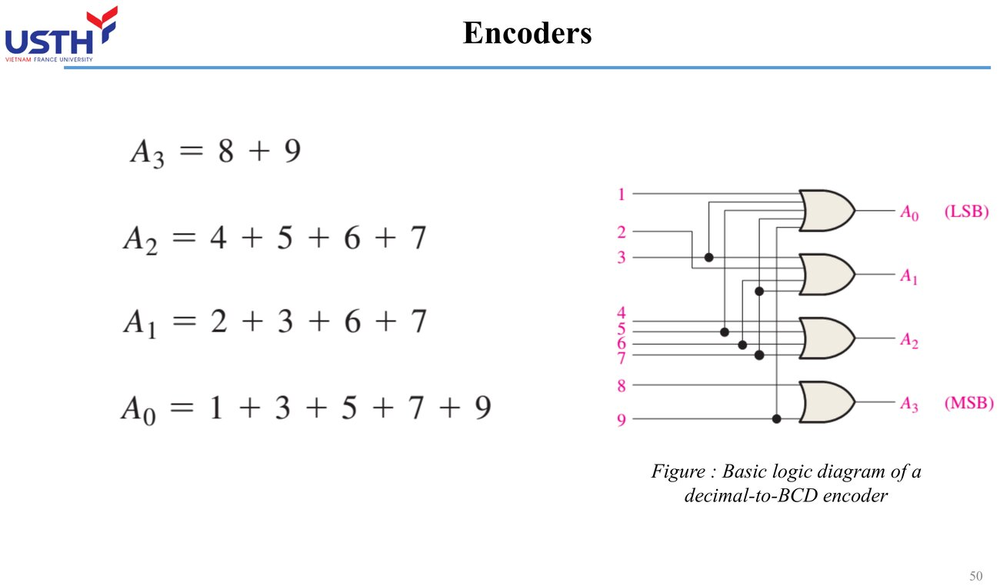
📖 Explanation for beginners
A priority encoder solves a real situation an ordinary (non-priority) encoder cannot handle: if TWO inputs are active at the same time, an ordinary encoder produces a wrong or undefined result, since it was not designed to “choose” between two signals.
A priority encoder resolves this with a simple rule: ALWAYS pick the highest-indexed active input, completely ignoring any lower-indexed ones. With I1 and I3 both active, the system entirely ignores I1 and encodes only I3, exactly like a triage rule in an emergency queue: whoever has the highest priority is always handled first.
Example: BCD-to-7-segment code conversion
A BCD-to-7-segment code converter takes a 4-bit BCD input (0000-1001) and drives 7 segment control signals (a-g) of an LED display to show the correct decimal digit: the same principle used for numeric readouts on many cockpit instruments.
📖 Explanation for beginners
The BCD-to-7-segment code converter is a special case of a “decoder”: instead of having EXACTLY ONE active output like an ordinary decoder, it has 7 outputs (a through g), and for each BCD input, a SPECIFIC COMBINATION of these outputs is turned on to shape the correct digit.
For example, displaying “0” requires turning on segments a,b,c,d,e,f (everything except the middle segment g); displaying “1” only needs segments b,c (the two right-side segments). Each digit 0-9 has its own on/off “template” for the 7 segments, precomputed by the decoder circuit from the incoming BCD code.
Example: using enable pins to cascade decoders
A 3-to-8 decoder IC has an extra Enable pin. When Enable=0, ALL outputs are forced inactive regardless of the address inputs. Cascading two 3-to-8 decoder ICs through their Enable pins extends the design to a 4-to-16 decoder (using the 4th address bit to select which IC is enabled).
📖 Explanation for beginners
The Enable pin turns a standalone decoder IC into a “building block” that can be combined into a larger system: when Enable=0, ALL outputs are locked to their inactive level regardless of the input address, effectively powering off that entire decoder block.
The cascading technique: use the 4th (highest) address bit to decide which of 2 decoder ICs gets its Enable turned ON (each IC handling 8 addresses using the low 3 bits), while the low 3 bits are shared by both ICs to select the correct output among the 8 lines of whichever IC is currently enabled. Result: 2 3-to-8 decoders combine into exactly one 4-to-16 system, with no need to design a new IC from scratch.
Comparison table of the four basic MSI circuits
| Circuit | Direction | Main use |
|---|---|---|
| Decoder | n in → 2ⁿ out (exactly 1 active) | Memory address decoding |
| Encoder | N in → log₂N out | Keyboard encoding |
| Multiplexer | N data channels → 1 out | Select one of many signal sources |
| Demultiplexer | 1 in → N out channels | Distribute a signal to many destinations |
📖 Explanation for beginners
This table gathers the 4 MSI circuits under exactly one criterion: which direction the data flows. Decoder and encoder mirror each other (n↔2ⁿ in opposite directions), and multiplexer and demultiplexer mirror each other too (N channels↔1 channel in opposite directions).
Remembering them as symmetric pairs (decoder-encoder, mux-demux) is much easier than memorising 4 separate definitions: each pair is just a “reversal” of the other, and once you understand ONE circuit in a pair, the other is understood simply by flipping the direction of thought.
Aviation application: memory address decoding in a cockpit computer
In a cockpit clock computer (Tooley Figure 6.11), the CPU must select the right ROM/RAM region to read/write. An address decoder takes the high-order address bus bits and activates the correct Chip-Select (CS) pin of the matching ROM or RAM, preventing two memory devices from contending for the data bus at once.
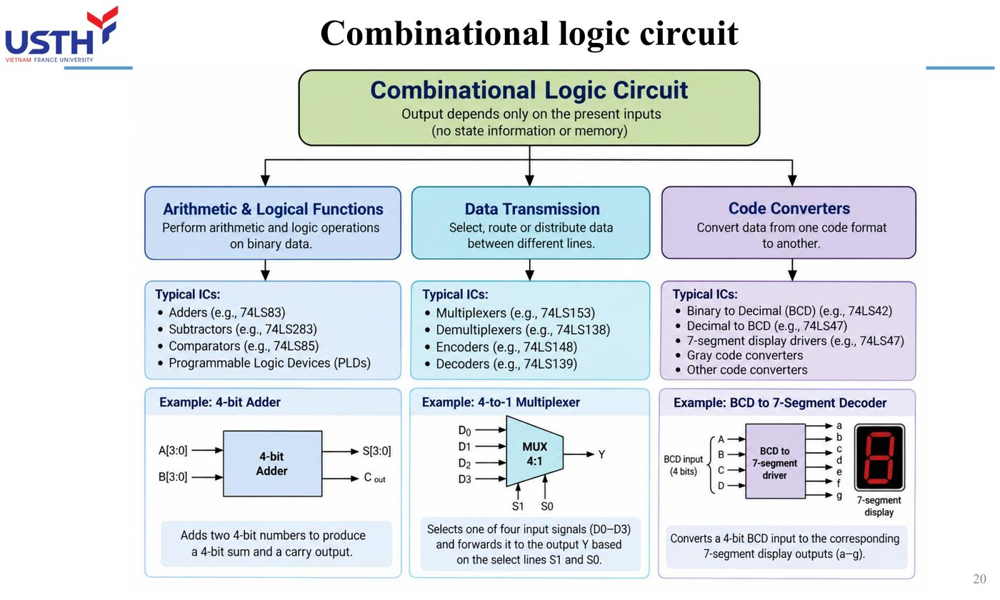
📖 Explanation for beginners
Memory addressing in the cockpit computer works exactly on the decoder principle just learned: the CPU places a binary address on the address bus, and an address decoder circuit “translates” that address into a SELECT SIGNAL for exactly one specific memory chip (ROM or RAM) via that chip's Chip-Select (CS) pin.
The critically important safety role of this circuit: if 2 memory chips were EVER simultaneously enabled by CS (due to a decoder fault or design error), both would try to drive the shared data bus at the same time, causing exactly the same electrical conflict as the “bus contention” problem learned in Module 02 on tri-state logic.
⚠️ Warning: don't confuse a 'dataless' decoder with a demultiplexer
Physically, a decoder and a demultiplexer can share the SAME IC (by treating one pin as 'data' instead of a fixed active level). But by PURPOSE: a decoder selects a line based on an address, while a demux distributes one data stream to many destinations: don't equate the two concepts just because they can share the same physical chip.
📖 Explanation for beginners
This is a subtle point easy to confuse: PHYSICALLY, a decoder IC and a demultiplexer IC can be the very SAME chip, differing only in how the designer “assigns roles” to its pins (holding one pin at a fixed level to act as a dummy “data” input turns a decoder into a demux).
But in terms of PURPOSE, the two concepts are entirely different: a decoder is used to SELECT a line based on an address (a selection purpose), while a demultiplexer is used to DISTRIBUTE an actual stream of data to multiple destinations (a data-transfer purpose). Do not conflate the two concepts just because they can share the same physical component.
Quick self-check
An 8-to-3 priority encoder has simultaneous active signals on inputs 2, 4, and 6. Which input will the encoded output correspond to, and why?
📖 Explanation for beginners
This practice exercise applies exactly the “pick the highest index” rule of a priority encoder just learned: with inputs 2, 4 and 6 all active simultaneously, the priority encoder entirely ignores inputs 2 and 4, encoding only the HIGHEST-indexed of the three, namely input 6.
The reason a priority encoder behaves this way: in many real applications (say, CPU interrupt handling), a higher-indexed signal often represents a more urgent or important event, so the “always prioritise the highest index” rule ensures the most important event is always handled first, no matter how many other events are waiting simultaneously.
Multiplexers (data selectors)
- Principle: n select lines for 2ⁿ input channels
- Application: 4-channel altitude data selector in an altimeter system
Defining a multiplexer
A multiplexer (data selector) selects 1 of N input data channels to route to a single output, based on the binary combination on its select lines.
📖 Explanation for beginners
Picture a multiplexer like a gate agent at a small airport with N runways but only ONE taxiway leading out: at any moment, the agent allows EXACTLY ONE aircraft from a specific runway (decided by a “selection ticket”) onto the shared taxiway, while aircraft on other runways must wait.
The formula n=log₂(N) tells you how many bits are needed on that “selection ticket” (the select lines) to distinguish N different runways: this is exactly the inverse of the 2ⁿ formula learned for decoders, since “selecting 1 of N channels” is itself a form of address decoding.
Example: truth table of a 4-to-1 multiplexer
| S1 | S0 | Output Y |
|---|---|---|
| 0 | 0 | D0 |
| 0 | 1 | D1 |
| 1 | 0 | D2 |
| 1 | 1 | D3 |

📖 Explanation for beginners
The 4-to-1 mux truth table reads very intuitively: the 2-bit combination on the select lines (S1S0) acts like an “address”, and that value determines EXACTLY which data channel (D0 through D3) gets connected through to output Y.
An interesting observation: this is exactly the truth table of a 2-to-4 decoder learned in Part 3, just interpreted differently: instead of “turning on the matching output line”, we interpret it as “letting the matching data channel pass through”. Mux and decoder are closely related in their underlying circuit structure.
Worked example: select lines for 16 and 32 channels
The number of select lines grows much slower than the number of data channels: this is exactly why multiplexers save wiring compared with direct parallel transmission.
📖 Explanation for beginners
The formula n=log₂(N) reveals a very useful property: the number of select lines grows MUCH more slowly than the number of data channels. Going from 16 channels to 32 channels (doubling the channel count) only adds 1 more select line (from 4 to 5), not doubling it.
This is exactly why a multiplexer is such an effective wire-saving tool: without a mux, transmitting 32 channels in parallel needs 32 separate wires; with a mux, only 5 select lines plus 1 shared output line are needed, 6 wires total instead of 32.
Example: cascading two 4-to-1 muxes into an 8-to-1 mux
Two 4-to-1 mux ICs each handle a group of 4 channels, then a 2-to-1 mux selects between the two ICs' outputs: 3 select lines total (2 shared select lines for both ICs + 1 group-select line), exactly matching n=log₂(8)=3.
📖 Explanation for beginners
Cascading 2 4-to-1 mux ICs to build an 8-to-1 mux is a very common “build a bigger block from smaller blocks” technique in digital design: instead of finding or designing a dedicated 8-to-1 mux IC, two off-the-shelf 4-to-1 mux ICs are combined, with a small extra 2-to-1 mux added downstream to “choose” between the two first-stage results.
The total select-line count matches the formula exactly: 2 select lines shared by both 4-to-1 ICs (choosing the channel within a group of 4), plus 1 group-select line (choosing which IC), for a total of 3, exactly equal to log₂(8)=3. This concretely demonstrates the theoretical formula holding true even when several ICs are chained together.
Defining a demultiplexer
A demultiplexer performs the reverse function: it takes one input data stream and routes it to exactly 1 of N outputs, chosen by the select lines: often sharing the same physical IC as a decoder.

📖 Explanation for beginners
A demultiplexer is the “mirror image” of a multiplexer: instead of merging N sources into one shared line, it takes a SINGLE stream of data and “scatters” it out to exactly 1 of N destinations, according to the address on the select lines.
An interesting technical point: circuit-wise, a demultiplexer often shares the exact same physical structure as a decoder (differing only in the role assigned to one pin), exactly as noted in Part 3: one IC can “play the role” of either a decoder or a demultiplexer depending on how the engineer uses its data pin.
Real example: A320 altitude data multiplexer (Tooley Figure 9.21)
A dual four-channel multiplexer selects 1 of 4 altitude data sources (selected altitude, actual altitude from the left/right ADC) to feed the ARINC 429 serial data encoder, needing only 2 binary select lines instead of 4 separate physical data paths.
📖 Explanation for beginners
The A320 altitude data-multiplexing example shows a multiplexer solving a genuinely practical problem: instead of needing 4 separate physical transmission lines for 4 different altitude data sources (each requiring its own ARINC 429 encoder, expensive and complex), the system needs only ONE shared encoder, with a multiplexer in front selecting which source gets encoded at each moment.
Just 2 binary select lines (enough to distinguish 4 sources per n=log₂(4)=2) are enough to control the entire source-selection process, a significant hardware saving compared with duplicating the encoder for each source.
Table: channels, select lines, and wiring saved
| Channels N | Select lines n | Without mux (N wires) |
|---|---|---|
| 4 | 2 | 4 |
| 8 | 3 | 8 |
| 16 | 4 | 16 |
With a mux, only n select lines plus one shared data output are needed, instead of N parallel data lines.
📖 Explanation for beginners
This table highlights the multiplexer's wire-saving benefit with concrete numbers: with 16 channels, not using a mux requires 16 separate parallel wires, while using a mux needs only 4 select lines plus 1 shared data line, 5 total.
The saving grows larger as the channel count increases: this is why a multiplexer is used almost universally whenever data from many sources must travel a long distance or through a constrained wiring space (like inside an aircraft fuselage), instead of running dozens of separate wires.
Aviation application: sharing one display bus among several parameters
An ECAM display must cycle through several dynamic engine parameters (N1, EGT, N2, oil quantity...). A fast multiplexer can select each signal source in turn to feed a shared display processing path, reducing the number of independent signal-processing channels needed.
📖 Explanation for beginners
The ECAM display needs to show many different engine parameters in rotation (N1, EGT, N2, oil pressure...), but the display-processing electronics behind the screen do not need, and should not have, a separate processing channel for EACH parameter.
The high-speed multiplexer solution: sequentially “scan” through each parameter source, feeding each one into a SINGLE processing channel at each moment, much like how the human eye rapidly scans across many lines of text to read a whole page without seeing every line at once. This technique significantly reduces the number of independent signal-processing circuits needed in the system.
⚠️ Warning: too few select lines silently drops data, it's not a random fault
If you design an 8-channel mux but only wire 2 select lines (distinguishing only 4 combinations), the remaining 4 channels will NEVER be selected: this is a predictable design error from the n=log₂(N) formula, not a random fault requiring experimental troubleshooting.
📖 Explanation for beginners
This is a design mistake PREDICTABLE by mathematics, not a random fault to be found by trial and error: if a mux needs to choose among 8 channels but uses only 2 select lines (creating only 2²=4 distinct address combinations), then CERTAINLY the remaining 4 channels (channels 4 through 7) will never be selectable, no matter what value the select lines are set to.
Before assembling the actual circuit, always apply the formula n=log₂(N) to calculate IN ADVANCE how many select lines are needed: for 8 channels, exactly 3 select lines are required (2³=8), not 2. This is how a design flaw is caught on paper, saving a great deal of hardware debugging time later.
Quick self-check
You need to select 1 of 6 temperature sensors to feed a single processor. What is the minimum number of select lines required, and are any address combinations left unused?
📖 Explanation for beginners
This practice exercise applies the formula n=log₂(N) to the case N=6 (not an even power of 2): since 2²=4 is not enough (less than 6) and 2³=8 is enough (greater than or equal to 6), a minimum of 3 select lines is needed.
The interesting part of this case: 3 select lines create 2³=8 possible address combinations, but only 6 real sensors need selecting, meaning there are 2 “spare” address combinations (say, corresponding to addresses 110 and 111) connected to no sensor at all. This is a normal, unavoidable outcome whenever the real channel count is not an even power of 2, not a design flaw.
Application in avionics systems
- Real example: 4-channel ARINC 429 multiplexer (Figure 9.21, Tooley)
- BCD to 7-segment code conversion for displays
Overview: where MSI logic is used in avionics
Per Tooley, MSI logic in aircraft falls into five main application groups: address decoding, priority encoding, data multiplexing, BCD-to-7-segment code conversion, and parity checking on data links.
📖 Explanation for beginners
This slide lists exactly 5 “job roles” that MSI circuits fill in a real aircraft, and interestingly all 5 have already been covered in detail in earlier parts: address decoding (Part 3), priority encoding (Part 3), data multiplexing (Part 4), BCD-to-7-segment code conversion (Part 3), and parity checking (new, covered on the next slide).
Use this slide as a “summary index”: if any role is still unclear, this is the moment to revisit that specific part before moving on to the real-world examples that follow.
Revisited: the ARINC 429 data multiplexer (Figure 9.21)
4 altitude data sources are multiplexed before being fed into the ARINC 429 serial data encoder: a direct textbook example illustrating a multiplexer in a real altimeter system.
📖 Explanation for beginners
This is not a new example, it is a deliberate CALLBACK to the altitude-data multiplexer example learned in Part 4, emphasising that this is a REAL application taken directly from the textbook (Tooley Figure 9.21), not a hypothetical scenario.
Encountering the same example twice, in two different parts (once focused on the multiplexer PRINCIPLE, once focused on its ROLE in the altimeter system), reinforces understanding from two complementary angles.
Example: a parity checker on a data bus
A parity generator/checker (built mainly from cascaded XOR gates) appends a parity bit to data transmitted on a bus. The receiver recomputes parity and compares it: a mismatch signals a transmission error (though it can't identify which bit failed).
📖 Explanation for beginners
A parity-checking circuit is a simple yet remarkably effective application of the XOR gate learned in Module 02: XOR outputs 1 exactly when the count of 1-inputs is ODD, so a chain of XOR gates can compute “is the total number of 1-bits in this data even or odd” using pure logic, with no need for a complex counter.
The error-detection principle: the sender precomputes a parity bit so that the total number of 1-bits (including the parity bit) is always even (or always odd, by convention). The receiver recomputes it and compares: if the result differs from the parity received, an error definitely occurred during transmission, though exactly which bit is wrong remains unknown.
Worked example: even parity of a data byte
Data byte 10110010 has 4 ones: an even count.
📖 Explanation for beginners
This exercise applies the even-parity principle concretely: counting the 1-bits in the byte 10110010 gives exactly 4 ones (at the positions holding value 1), an EVEN number.
Since the goal of even parity is to keep the TOTAL number of 1-bits (including the added parity bit) always even, and the count is already 4 (even), the parity bit to add must be 0 so as not to change that evenness. If the original byte instead had an odd count of 1-bits, the added parity bit would need to be 1 to “pull” the total back to even.
Example: address decoding on a backplane bus system
In a multi-board system sharing one backplane bus (e.g. VMEbus), each board has a fixed address code. A decoder circuit on each board compares the bus address against its own code: only the matching board responds, avoiding data conflicts.
📖 Explanation for beginners
In a system with several circuit boards sharing one backplane bus (a physical bus line running through the whole chassis), each board needs to “recognise” when data on the bus is meant for it, and not for another board.
The solution: each board is assigned a fixed address code, and has a built-in address decoder circuit (exactly the principle learned in Part 3) continuously comparing the address currently on the bus against its own fixed code. Only when the two addresses match does that board “speak up” and respond, while all other boards stay silent, avoiding data conflicts on the shared bus.
Example: displaying N1/EGT on ECAM via BCD-to-7-segment
Engine N1 (e.g. 92%) is processed internally as BCD, then a BCD-to-7-segment code converter drives the correct LED/segment control signals so the pilot reads the decimal figure directly, with no need to interpret raw binary.
📖 Explanation for beginners
This is a complete real-world example combining BOTH concepts learned so far: the N1 value (engine speed, say 92%) is stored and processed internally as BCD (exactly the BCD principle from Module 01), then passed through a BCD-to-7-segment code converter (exactly the special decoder principle from Part 3 of this module) to generate the signals lighting up the right LED segments.
The end result: the pilot sees the familiar number “92” directly on the ECAM screen, with no need to “decode” any binary or hex string mentally, even though the entire internal process rests on the binary/BCD arithmetic principles learned earlier.
Summary table: MSI circuit ↔ real avionics application
| MSI circuit | Avionics application |
|---|---|
| Multiplexer | Multiplexing altitude data before ARINC 429 encoding |
| Decoder | Memory/board address decoding on a backplane bus |
| Priority encoder | Encoding key presses on an MCDU keypad |
| Code converter | BCD-to-7-segment for ECAM displays |
| Parity generator/checker | Detecting transmission errors on a data bus |
📖 Explanation for beginners
This final summary table gathers the 5 MSI circuits learned (multiplexer, decoder, priority encoder, code converter, parity generator/checker) alongside EXACTLY ONE concrete avionics application for each, letting you see at a glance how abstract theory connects to concrete real-world use, all in one table.
Use this table as a reverse self-check: cover the “avionics application” column, try to recall from memory where each MSI circuit might be used on the aircraft, then uncover it to verify.
Why MSI (not SSI or VLSI) fits these functions
These functions (decoding, encoding, multiplexing) are fixed logic that doesn't need VLSI's programmability, yet are more complex than a few standalone SSI gates: MSI strikes a balance between cost, reliability (fewer solder joints by combining several gates into one IC), and just enough functionality.
📖 Explanation for beginners
This question digs DEEPER into the reasoning behind a technology choice, beyond just knowing a definition. Functions like decoding, encoding, and multiplexing are all FIXED LOGIC (behaviour that never needs to change after manufacturing), so they do not need VLSI's complex and costly PROGRAMMABILITY.
Yet at the same time these functions are more complex than a handful of standalone SSI gates (needing tens to hundreds of coordinated gates). MSI is the optimal balance point: enough functionality, reasonable cost, and, importantly for avionics, PACKING many gates into one IC means FEWER solder joints compared with using many separate SSI ICs, improving the overall system's reliability.
⚠️ Warning: propagation delay accumulates across cascaded MSI stages
When cascading multiple MSI ICs (e.g. two decoder stages, or a mux feeding an encoder), each stage's propagation delay ADDS UP. For systems with strict real-time requirements (e.g. safety warnings), total delay across the whole MSI chain must be computed, not just each IC's individual delay.
📖 Explanation for beginners
This is a lesson in SYSTEMS THINKING rather than looking at individual components in isolation: each MSI IC has its own propagation delay, usually just a few nanoseconds, seemingly negligible.
But when MANY stages of ICs are chained in series (say, a signal passing through 2 decoder stages, then a mux, then an encoder), these small delays ADD UP into a significant total delay. For systems requiring extremely fast response (such as urgent safety warnings), engineers must calculate the TOTAL delay across the entire signal chain, not just consider each IC's delay in isolation, to ensure the system still responds within the required time.
Module summary & self-check
You've covered: scale of integration (SSI→VLSI), fan-in/fan-out, decoders/encoders, multiplexers, and real avionics applications. Ask yourself: if you had to design a circuit that selects 1 of 5 pressure sensors to display in turn on one screen, which MSI circuit would you use, how many select lines would you need, and why?
📖 Explanation for beginners
This wrap-up exercise requires applying SEVERAL concepts learned throughout the module IN SEQUENCE: selecting 1 of 5 pressure sensors needs a multiplexer (exactly the Part 4 principle), and the formula n=log₂(5) shows a minimum of 3 select lines is needed (since 2²=4 is not enough, 2³=8 is enough).
The “why” part requires explaining that a multiplexer saves far more wiring than running 5 separate signal lines to the display processor, needing only 3 select lines plus 1 shared data line. If you can answer this fluently, you are ready for the multiple-choice questions at the bottom of the page and for the upcoming Module 04.
Select lines required for a multiplexer
- Nnumber of multiplexer input data channels
- nnumber of select lines required
📜 Theoretical & historical background
The first integrated circuit was demonstrated by Jack Kilby (Texas Instruments) in 1958, followed by Robert Noyce's (Fairchild) more practical planar-technology version in 1959. Moore's Law (1965) then predicted the number of transistors per chip doubling every 18-24 months: a trend directly reflected in the SSI→MSI→LSI→VLSI progression covered in this chapter of Tooley.
🔎 Real case study: altitude data multiplexer on the A320
The A320 altimeter system needs to select 1 of 4 altitude data sources (selected altitude and actual altitude from the left/right ADC) to feed into the ARINC 429 serial data encoder (see Figure 9.21, Tooley). A dual four-channel multiplexer performs this switching with only 2 binary select lines instead of 4 separate physical data paths: a meaningful weight saving in aircraft wiring.
⚠️ Common trap
Confusing a 'demultiplexer' (1 input → many outputs) with a 'decoder' (address decoding): the two sometimes share the same physical IC (a decoder with no dedicated data input can act as a demux by treating one line as data and the rest as select address), but functionally they serve different purposes.
Quick self-check (10 questions, originals first)
Deep practice
Open this module's question bank (70 + 11)
Jupyter notebook
Download the notebook (already executed, real outputs):
Source errors and doubts
No errors recorded for this module yet.